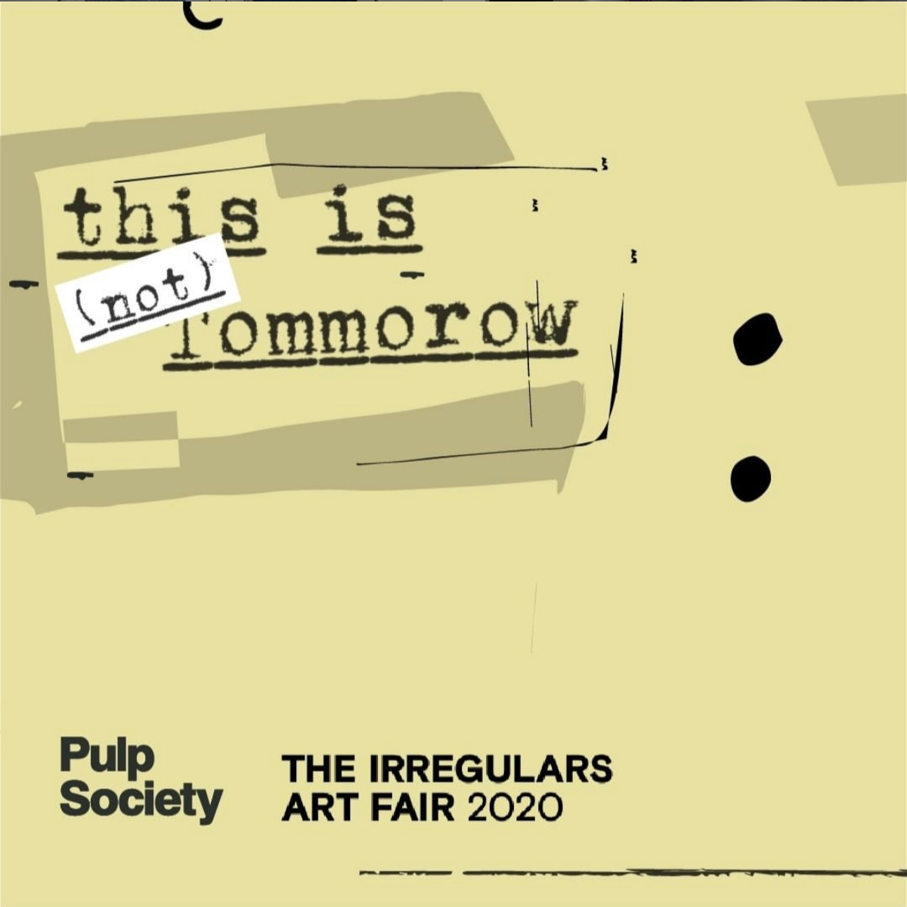
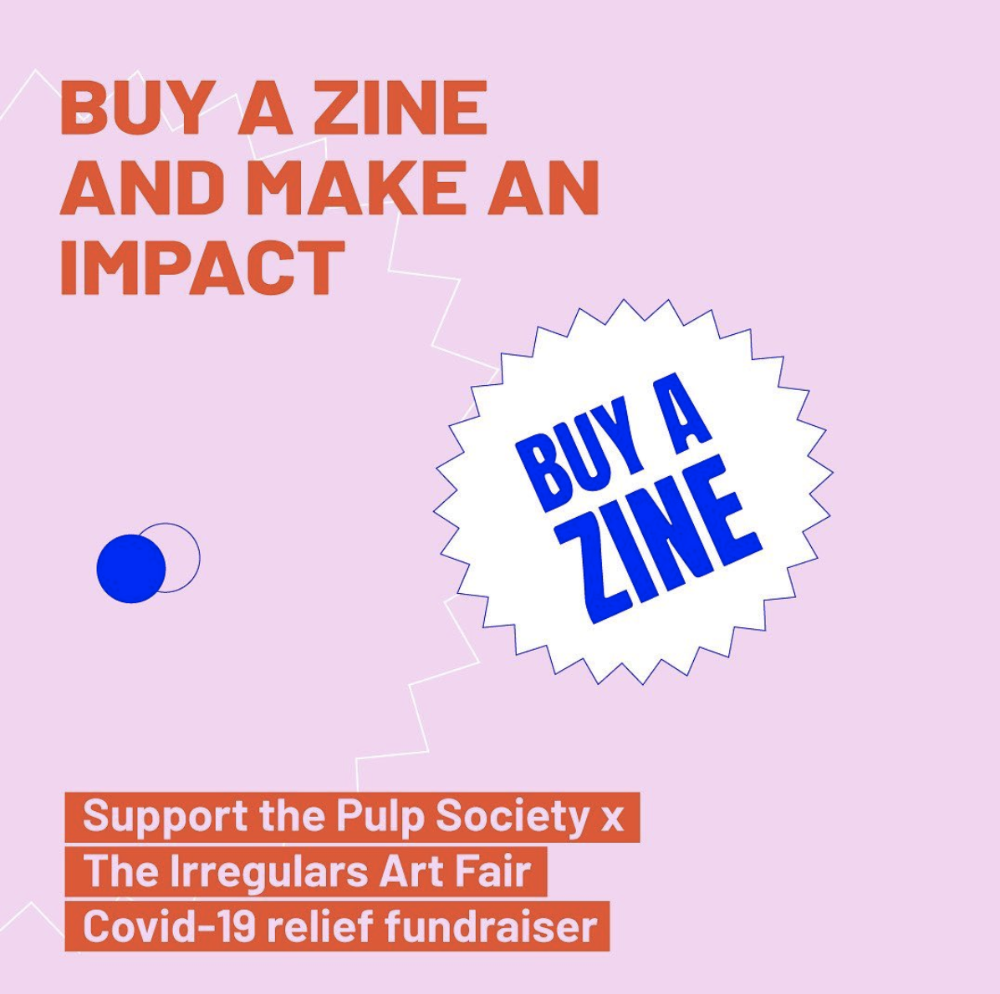
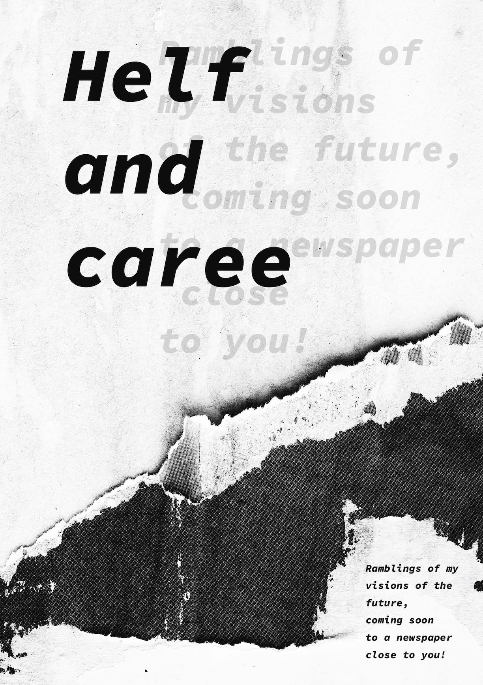

Helf and Caree
Overview
This is (now) online is a collaborative zine-making game conceptualised by Pulp Society and The Irregulars Art Fair during the COVID-19 lockdown. Nirmal Ravisyam and I were paired up to create a zine together with the theme "Water wets and fire burns". I worked with a machine learning algorithm to generate speculative headlines, which were used as prompts to write articles. Nirmal created visuals for the generated headlines and the resulting articles.
Role
Writer
People
Over the course of a few weeks, 78 artists, illustrators, writers and first-time makers collaborated in a unique digital program to make 16 zines. As an attempt to combat the loneliness and creative isolation resulting from the lockdown, Pulp Society x TIRAF created two digital games - Exquizine and Blind Date — in hope of energising the creative community through the power of collective action. The participating artists along with Pulp Society x The Irregulars Art Fair donated the proceeds of this collaboration to the COVID-19 relief work.


Helf and Caree is a zine co-created with Nirmal Ravisyam. I crafted fake headlines with the help of GPT-2 and LSTM machine learning algorithms, which were then used as writing prompts to paint a picture of an absurd, speculative reality inspired by our own. Nirmal created a variety of mixed-media illustrations that both complement and contradict the writing to create something halfway between a newspaper and a comic book.

Zine Cover


Spreads from the zine
This zine is meaningful and significant for the times we live in, where social media has become the generator of news, and sometimes and more importantly fake news. Prime Ministers and the powers that be are counting on it and citizens are taking it in without the much-needed pinch of salt. It is a poignant reflection of 2020 with our very own influencer marketing, social media journalism and vigilante justice.

How far removed from reality is this? If at all...